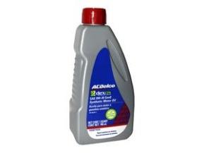
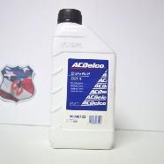
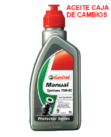

El aceite es un líquido que sirve para lubricar las partes metálicas del motor, disminuye la fricción en las partes móviles y de esta manera evita el desgaste. Cuando un motor está bien lubricado reduce el gasto de combustible y aumenta la potencia.
Cantidad: 4 litros
Calidad del aceite: dexos1
Viscosidad: 5W-20 y/o SAE W20
Precio aproximado: 120$ por litro

Este líquido transmite la fuerza que hacemos sobre el pedal de frenos hacia cada uno de los frenos de nuestro coche para ayudar a detenerlo.
Tipo de líquido: DOT 4
Cantidad: Asegurarse de que el nivel del
depósito este dentro del rango de mínimo y máximo.
Precio aproximado: 60$ - 100$ por 350ml.
Advertencia: el líquido de frenos es venenoso y corrosivo.

El líquido de transmisión es un elemento indispensable para evitar el daño irreversible a los componentes de la transmisión gracias al calor generado por la fricción. Este líquido permitirá el libre funcionamiento de las piezas y al final ahorrará combustible al generar menos esfuerzo para mover las ruedas.
Tipo: SAE 75W-85W
Cantidad: 2.1litros
Precio aproximado: 190$ por 500ml.